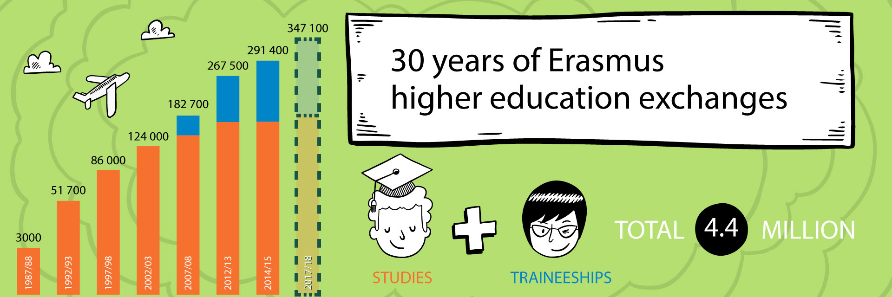

DESCRIPCION DEL PROYECTO
Debido a los cambios en el mercado laboral y en los sistemas de educación y formación el desarrollo de este proyecto de movilidad dará al consorcio la posibilidad de:
- Que el profesorado de FP desarrolle, a través de las prácticas formativas en empresas europeas, jobshadowing y docencia en centros educativos europeos las capacidades y habilidades modernizar y mejorar las enseñanzas que imparten dando mayores posibilidades al alumnado de inserción al mercado laboral único Europeo, la adaptación a la era digital y a la competitividad en una economía global basada en el conocimiento.
- Conocer el mercado laboral y los perfiles profesionales par promover la adquisición y el desarrollo de capacidades necesarias para el mercado laboral actual.
- Conocer cómo se gestiona las practicas en empresas y la FP dual en otros países de Europa para promover el aprendizaje basado en el trabajo.
- Favorecer un ambiente innovador, dinámico y profesional dentro de los centros educativos que participan en el proyecto integrando las buenas prácticas, innovación, internacionalización y modernización en la formación que se imparte al alumnado usando usando nuevas metodologías como el aprendizaje analítico por exploración enfocado a la resolución de problemas, el trabajo por retos, la gamificación, el aprendizaje colaborativo, etc.
- Trabajar en equipo con el profesorado de otros centros nacionales que ofrecen docencia de las mismas familias profesionales así como establecer contactos más duraderos con el profesorado de los centros internacionales y las empresas para así promover la movilidad del alumnado de FP y la cooperación transnacional.
- Mejorar la orientación que se ofrece al alumnado para hacer de la FP su primera opción.
- Mejorar la aplicación de los sistemas de evaluación y reconocimiento de competencias adquiridas mediante la formación formal, no formal e informal así como de los periodos de estancia el en extranjero. ECVETa c y EUROPASS.
- Mejorar la sensibilización intercultural entendiendo el significado de ciudadanía internacional activa y de los valores democráticos, fomentando la inclusión, la equidad y la igualdad.
- Mejorar el atractivo de la FP y el prestigio de los centros educativos del consorcio.
La principales actividades que llevarán por todos los socios serán:
- Preparación de la movilidad que incluirá: selección de los participantes, evaluación inicial de sus competencias, formación previa de los participantes, aspectos logísticos y contractuales, coordinación...
- Realización de la estancia. Puesta en marcha del programa en las empresas. La movilidad contempla también actividades culturales.
- Evaluación de los participantes. Las competencias adquiridas durante la misma serán certificadas con Europass, certificado de empresa y certificado de la Consellería de educación
- Monitorización. Se realizará un seguimiento de la evolución de los participantes por los medios establecidos en el proyecto.
- Evaluación del proyecto de modo cuantitativo y cualitativo.
- Difusión. Será realizada durante todo el proyecto por todos los socios.